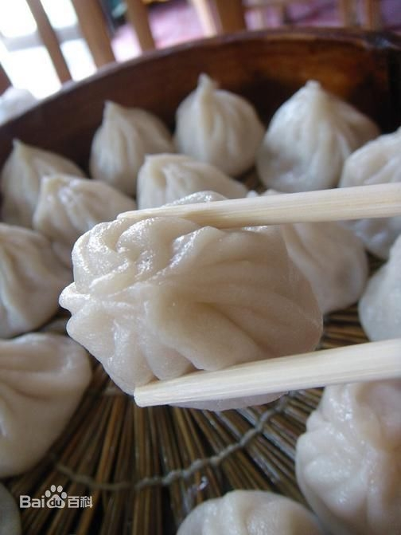
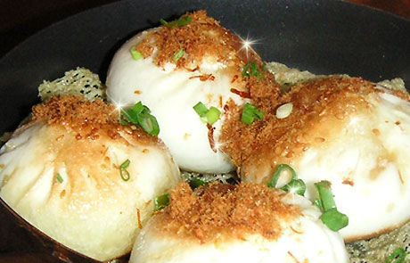
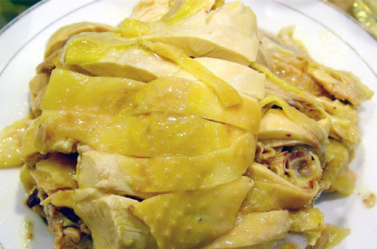
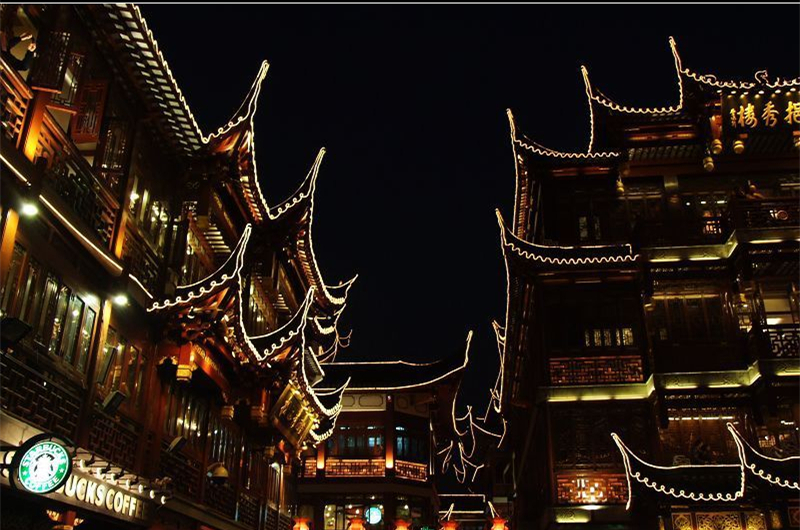
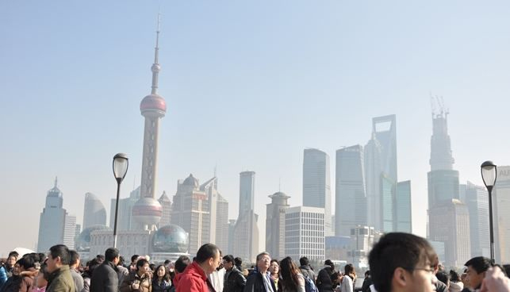

小笼
南翔小笼包初名“南翔大肉包子”，后称“南翔大包子”，再称“古猗园小笼包”，现叫“南翔小笼包”。大肉包子采取“重馅薄皮，以大改小”的方法，选用精白面粉擀成薄皮；又以精肉为馅，不用味精，用鸡汤煮肉皮取冻拌入，以取其鲜，洒入少量研细的芝麻，以取其香；还根据不同节令取蟹粉或春竹、虾仁和入肉馅，每只包折裥14褶以上，一两面粉制作10只，形如荸荠 呈半透明状，小巧玲珑。美食本来就是一门艺术，中国人发明的小笼包可算是这门艺术中的一个杰作，而小笼包更是把这一艺术发展到了一个极致。南翔小笼包制作精细，它以精白面粉发酵为皮，选取猪腿精肉为馅，而最独特的是要用隔年老母鸡炖汤，再和猪肉皮煮在一起，然后做成皮冻，拌入馅内。

生煎
生煎又称生煎包子、生煎馒头，是流行于上海、浙江，江苏及广东的一种特色传统小吃，广受国人喜爱，材料有面粉、芝麻、葱花、猪肉、肉皮冻等

白斩鸡
白斩鸡又叫白切鸡 ，是一道中华民族特色菜肴，起源于广东，在南方菜系中普遍存在，以粤菜的白斩鸡最知名。形状美观，皮黄肉白，肥嫩鲜美，滋味异常鲜美，十分可口。 肉色洁白皮带黄油，具有葱油香味，葱段打花镶边，食时佐以芥末酱或特制酱油，保持了鸡肉的鲜美、原汁原味，食之别有风味。 2018年9月，被评为“中国菜”之上海十大经典名菜。

豫园
位于上海市老城厢的东北部，北靠福佑路，东临安仁街，西南与上海老城隍庙毗邻 [1] ，是江南古典园林，始建于明代嘉靖、万历年间，占地三十余亩。 园内有江南三大名石之称的玉玲珑、1853年小刀会起义的指挥所点春堂，园侧有城隍庙及商店街等游客景点。 [2] 豫园在1961年开始对公众开放，1982年被国务院列为全国重点文物保护单位。 [3]

外滩
外滩（英文：The Bund；上海话拼音：nga thae），位于上海市黄浦区的黄浦江畔，即外黄浦滩，为中国历史文化街区。1844年（清道光廿四年）起，外滩这一带被划为英国租界，成为上海十里洋场的真实写照，也是旧上海租界区以及整个上海近代城市开始的起点。 外滩全长1.5公里，南起延安东路，北至苏州河上的外白渡桥，东面即黄浦江，西面是旧上海金融、外贸机构的集中地。上海辟为商埠以后，外国的银行、商行、总会、报社开始在此云集，外滩成为全国乃至远东的金融中心。民国三十二年（1943年）8月，外滩随交还上海公共租界于汪伪国民政府，结束长达百年的租界时期，于民国三十四年（1945年）拥有正式路名中山东一路。 外滩矗立着52幢风格迥异的古典复兴大楼，素有外滩万国建筑博览群之称，是中国近现代重要史迹及代表性建筑，上海的地标之一。1996年11月，国务院将其列入第四批全国重点文物保护单位。与外滩隔江相对的浦东陆家嘴，有上海标志性建筑东方明珠、金茂大厦、上海中心大厦、上海环球金融中心等，成为中国改革开放的象征和上海现代化建设的缩影。 2018年3月，上海外滩在全面推进“第一立面”（即临江建筑群）功能置换的基础上，同步启动了“第二立面”（即非临江的外滩建筑群）功能置换工作。 [1]